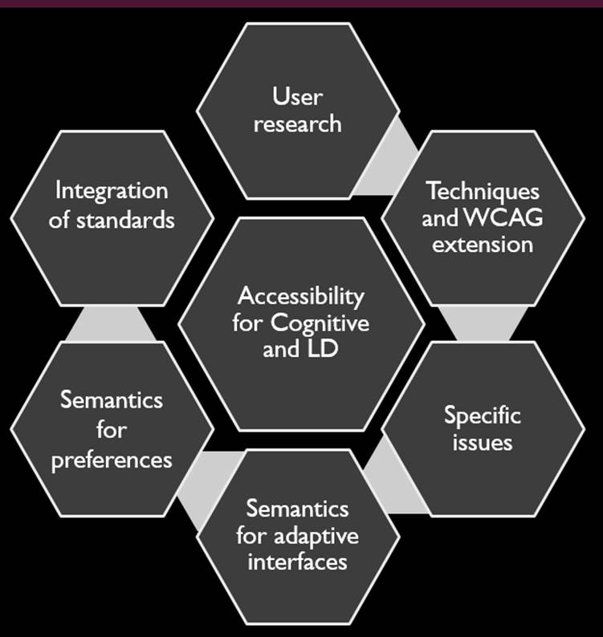
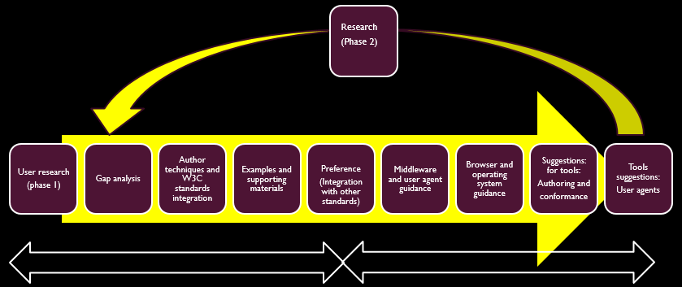

This document is a gap analysis and roadmap for the state of accessibility for people with learning and cognitive disabilities when using the Web and information technologies. It builds on the information presented in Cognitive Accessibility User Research [coga-user-research] and Cognitive Accessibility Issue Papers [coga-issue-papers] to evaluate where user needs remain to be met in technologies and accessibility guidelines. For various accessibility issues, this document provides a summary of issues and techniques, then identifies gaps and unmet user needs and suggest ways technologies may meet these needs in the future.
This section describes the status of this document at the time of its publication. Other documents may supersede this document. A list of current W3C publications and the latest revision of this technical report can be found in the W3C technical reports index at https://www.w3.org/TR/.
This document was published by the Accessible Platform Architectures Working Group and the Accessibility Guidelines Working Group as a Working Draft. This document explores user needs for people with cognitive or learning disabilities and identifies where additional web content authoring guidance is needed to help authors meet these needs. This information is important to new guidance being added to Web Content Accessibility Guidelines 2.1.
Feedback on any aspect of the document is accepted. For this publication, the Working Groups particularly seek feedback on the following questions:
Are any use cases or user needs missing?
Do the gaps identified describe current needs for improvement in guidelines and technologies?
Is there a need for further approaches to meet the needs of users with cognitive or learning disabilities?
Publication as a Working Draft does not imply endorsement by the W3C
Membership. This is a draft document and may be updated, replaced or obsoleted by other
documents at any time. It is inappropriate to cite this document as other than work in
progress.
The Cognitive and Learning Disabilities Accessibility Task Force's aim is to improve web accessibility for people with cognitive and learning disabilities.
This document contains a gap analysis and review of key issues, a roadmap for inclusion for different user needs.
This is being done as part of the Web Content Accessibility Guidelines (WCAG) and Accessible Platform Architecture Working Group (APA WG), part of the Web Accessibility Initiative (WAI) of the W3C. Challenges facing this work include:
Lack of availability of open research: Research on this topic tends to be behind a “paywall” which means that developers and policy makers may be unable to find out what techniques are proven to work to address the needs of people with disabilities
There is a wide range of cognitive disabilities; each type of impairment is different, with diverse symptoms and particular digital accessibility requirements. This adds to the complexity of knowing how to address user needs.
The advice given in the research and available guidance is often vague and is not testable. So, even if developers read the research they would not know exactly what to do or when they have reached an acceptable level of accessibility.
Another major challenge is capturing difficulties related to cognitive disabilities that may be undeclared. People with cognitive disabilities may be embarrassed about their disabilities and may be less likely to request accommodations. They may be afraid of discrimination, especially in the work place. Others are not aware of their disability or of the impact it has on their functioning.
Attitudes and misinformation can also become a barrier to inclusion for people with cognitive disabilities. For example, developers that may feel people with cognitive disabilities are not in their "target audience" and so have no interest in their inclusion. Also, studies of usability often over-sample college students. This can mean that the results work less well for those inadequately represented among sub-groups of college students (such the aging population).
Attitudes and misinformation can also become a barrier to inclusion for people with cognitive disabilities. For example, developers that may feel people with cognitive disabilities are not in their “target audience” and so have no interest in their inclusion. Also, studies of usability often over-sample college students. Thus the results work less well for groups who are not well represented among sub-groups of college students (such the aging population).
Accessibility has typically been based upon the assumption that any website can be designed to be usable by people with disabilities. However, when making a website usable for people with cognitive disabilities, the content itself may need to be changed (e.g. simplified), or support adaptability (e.g. multi-modal delivery).
Addressing these issues requires us to make a broader view of solutions for accessibility, such as a content focused approach and to explore personalization solutions that incorporate inclusive design. To address these issues we have adopted the following strategies:
Select a phased approach. In our first phase we looked at eight different disabilities or categories that cut across types of cognitive impairment in terms of severity and brain function. Although some user needs might not have been identified in this phase, this approach made the work involved practical and it is likely that most key needs will have been identified. Other cognitive disabilities and emotional disabilities may be included in phase 2 and the current user groups may be re-examined.
Compile user research and literature reviews on the selected disability groups. These literature reviews mean that key findings are in the public domain and are easily available.
Compile a list of authoring techniques that include the most useful strategies from all the different user group research
Create testable and widely adoptable sets of success criteria that let authors know exactly what they need to do and when they have completed the task. (This might then be added to WCAG [WCAG20] for cognitive disabilities)
Author a series of issue papers [coga-issue-papers] that explore topics beyond simple content such as security or personalization.
Review the techniques and issue papers to identify the gaps between what is currently supported in accessibility guidelines and in the web architecture and what is needed to enable accessibility for people with cognitive disabilities
Create a roadmap to show how we can fill these gaps.
In addition to this gap analysis we have first drafts of the following accompanying documents: (Note they are works in progress and may change.)
Issue papers on topics such as security, safety and how they are affected by cognitive disabilities. (See
[coga-issue-papers].)
An authoring techniques document, including
techniques that help all users and
techniques that help specific user groups.
More details can be found in the techniques document available from our wiki.
The techniques will also lead to a proposal for a WCAG 2.1 (see appendix two).
Draft for a semantics for adaptive interfaces (that may become a WAI-ARIA [wai-aria] extension) and personalization syntax to enable adaptable interfaces (see appendix one for details).
The diagram shows how these need to be integrated to enable accessibility for people with cognitive disabilities

Figure 1Figure 1. Diagram showing user research leading to techniques & WCAG extension, specific issues, semantics for adaptive interfaces and preferences with integration of standards
A roadmap must enable the integration of all the pieces that can make accessibility for people with cognitive disabilities workable. A roadmap must also address the author needs and issues that will help make this work practical. For example: Best practice documents and how to ensure that personalization is practical and testable.

Figure 2Figure 2 Anticipated Roadmap
The diagram shows what we are anticipating moving towards a roadmap. (Note that this work has yet to be completed.)
User research (phase 1)
Gap analysis
Author techniques and W3C standards integration (such as WCAG [WCAG20] and VOICE ML or ARIA [wai-aria])
Support and possible standardization of preference (user settings) and metadata so that terms and setting are interoperable and user needs can be met across different Web applications. (Integration with other standards).
Web semantics that enable personalization of content such that web authors can employ mechanisms that adapt Web content to meet the needs of the user according to the user preferences.
Author support providing examples and supporting materials such as best practices and techniques. Test cases for personalization.
Middleware and user agent guidance
Browser and operating system guidance
Suggestions for tools: For example guidance for authoring and conformance tools and user agents.
Then we can start the process again with phase 2 for additional research and new user groups, possibly including emotional disabilities.
1.1 Importance of This Document
This document is important because enabling people with learning and cognitive disabilities to use the Web and Web technologies is of critical importance to both individuals and society.
More and more, the Internet and the Web have become the main way people stay informed and current on news and health matters; keep in touch with friends and family; and it can provide independence such as convenient shopping etc. People who cannot use these interfaces will have an increased feeling of having a disability and of being alienated from society.
Further, with the advent of the Web of Things, everyday physical objects are connected to the Internet and have Web interfaces. Being able to use these interfaces now is an essential component of allowing people to maintain their independence, stay in the work force for longer, and stay safe.
Consider that the population is aging. The global share of population aged 60 years or over is expected to reach 21.1 per cent by 2050 and is typically higher in developed countries. A majority of people over 60 years old notice a decline in memory and executive function such as an Age Associated Memory Impairment (38.4%), Mild Cognitive Impairment (15.3%) or less frequently, dementia (8.8%). That means more and more people are dependent on others for things that they could do themselves, increasing the crippling cost of care and reducing human dignity.
We therefore invite you to review this draft; and comment and consider how your technologies and work may be affected by these issues.
1.2 People with Cognitive and Learning Disabilities and the Web
People with cognitive and learning disabilities may be unable to use web content because of the design choices of the author. Examples include:
People with impaired short term memory are unlikely to be able to remember passwords and access codes. They may have trouble or be unable to remember new symbols and interface paradigms.
People with language related disabilities may need simple clear language and instructions. They may also need supporting graphics and familiar symbols
People with communication disabilities may need clear literal language and may not understand metaphors or non-literal text and symbols.
People with dyscalculia may not understand numerical references such as percentages.
People who struggle with keeping and regaining focus, may be unable to focus on a task if there are lots of distractions and interruptions. They may need headers and signposts to help them regain the context after their attention has been lost (including in multi-media).
Many groups will need support to minimize errors and complete their task. They will struggle with complex, multi-stage processes that were not necessary for the task at hand such as filling out forms or entering data correctly or finding the content or feature that they need.
1.3 Finding your way around this document
It is a long document and we know it can be hard to find your way around it. ( In the meantime here are some sections of particular interest:
There is a Summary of Issue Papers that addresses some of the issues that people with learning and cognitive disabilities face, such as problems with logging on, safety, voice menu systems, and many other topics. This may be useful for anyone trying to gain more understanding of the topic.
There is a section with Tables of User Needs that identify the different needs of the community and proposes suggestions on how standards and technologies could be developed to meet these needs. This may be useful for standards’ groups and policy makers.
There is also an appendix on how to make content usable for people with learning and cognitive disabilities. This section contains a section with practical advice and content developers may prefer to start here. We hope it will also meet the needs of web developers, content creators and policy makers.
Editor's note: This section will added
We are aware that it is difficult to find your way around this document. We intend to add this section to help. Suggestions for other ways to improve it are welcome.
1.4 Assumptions
There is a huge number of cognitive disabilities and variations of them. If we attempt an analysis of all the possibilities, the job will be too big, and nothing will be achieved. Therefore, we are adopting a phased approach, selecting in phase one a limited scope of eight diverse disabilities, and hope to achieve something useful within that scope. Also note that helping users improve skills, and emotional disabilities, are out of scope for phase one. We anticipate this analysis will continue to a second or third phase where more user groups are analyzed, and the existing analyses are updated with new research and with new technologies and scenarios.
1.5 Maturity of This Publication
The first and second sections of this document are an introduction that analyses the current situation and discusses many issues. Although we are expecting more work to be done on these sections, we consider them to be a mature.
Subsequent sections (the roadmap) identifies unmet user needs and proposes way to solve these needs. These sections are not mature and are often incomplete. We are publishing them early to solicit early feedback on the format and the identification of user needs. You can follow our work on this section and see the latest draft from our wiki.
2. Summary of Issues and Techniques
As discussed above, the task force reviewed different disabilities to identify techniques that supported their using the web. The task force also reviewed issues that went beyond standard Web content, but affected the use of the Web for people with cognitive and learning disabilities.
This section is a summary of these findings. The full reports can be found from our wiki.
2.1 Overview of Techniques
Most designers want people to be able to use their site. However designs that might be difficult for some people to use can actually bar people with cognitive and learning disabilities from using the content at all. Typically this happens because content providers may not be familiar with the needs of users having these impairments. We have reviewed multiple user groups as a first phase to identify user needs and challenges that are not fully included in WCAG. From this research we have identified techniques and themes though the techniques that authors need to be aware of (and are not full addressed in WCAG 2.0) The key themes are:
Help as many users as possible understand the site and know how to use it. This often involves using things that are clear and familiar to the user so that they do not have to learn new symbols, terms or design patters. Personalization based on user needs and markup properly annotated with cognitive semantics can help make the symbols and design as familiar to the user as possible.
Prevent the user from making mistakes and make it easy to correct mistakes when they do occur. A good design and use of proven scripts will make errors less likely, but when they do occur the user should know how to correct them, without having to render other data or start from the beginning.
Help the user to refocus and to restore context if attention is lost. Items like breadcrumbs can help orientate the user and help the user restore the context when it is lost. (Making breadcrumbs clickable can also help the user undo mistakes)
Main techniques include:
Use a clear structure with easy to follow sections short paragraphs manageable chunks
Use an easy to follow writing style
Provide rapid and direct feedback
Help the user understand the content and orientate themselves in the content.
Help users complete and check their work to make it less likely that the user will make mistakes and easier to undo mistakes when they occur
Provide help
Help the user focus and help restore the context if attention is lost
Enable adaptability and personalization, so that symbols text and other features are familiar and helpful to the user
Minimize the cognitive skills required to use the content and avoid barriers that stop people with cognitive disabilities from using content, such as hard to use security mechanisms.
A full list of the authoring techniques identified can be found on our wiki.
2.2 Summary of Technique Solutions
To help bridge the gap we propose the following strategies:
1. Construct a full list of techniques.
2. Support an extension to [WCAG] that supports the techniques. This will include:
Writing new WCAG Success criteria and techniques.
Suggesting changes to existing success criteria such as changing the text or the conformance level
Proposing new success criteria when necessary.
(See appendix two for details of the new WCAG Success criteria and techniques.)
As part of this effort it is important to make this guidance as clear and prescriptive as possible, so that author knows what they need to do and when they have met the requirements.
3. Create a new semantics specification to define the associated semantics required for content adaptation.
This could be done via a WAI- ARIA module or a new Cognitive semantics specification
The techniques for adaptation MUST use these semantics
Specify concrete user settings to represent user preferences that can be used to direct a web application on how to modify the content
(See appendix one for details on the proposed semantics.)
4. Define testing criteria to ensure the authors know when they are done.
This may include new rule sets
This may require the creation of a test suite or specification.
5. Support, and when appropriate, enable better personalization and adaption of content to meet our users' needs. This has the following advantages:
It reduces the effort needed by the author. The author will just need to enable personalization, which is easier then working on issues such as simplification and clarity.
Enables author creativity. Ideally an author could create any interface that they wish, but by enabling API's and personalization, our user groups can receive an adapted interface that is suitable for their needs.
Better accessibility and inclusion. Sometimes, especially with these user groups, user needs can conflict. With adaptability and personalization the interface is personalized to the individuals user needs.
See the discussion on personalization below.
2.3 Summary of Issue Papers
The following sections provide a summary of the issues and solutions. Full versions can be found from our wiki.
2.3.1 Flat Design
Since 2013, flat design has become a popular UI design pattern characterized by clean flat areas of color, clear typography and simply iconography.
2.3.1.1 Problem with Flat Design
Many people can not learn easily new design metaphors (most coga groups) or remember things that they learned (such as people with a Mild Cognitive Impairment or dementia). Without these skills it can be much harder or impossible to:
locate a desired items to interact with and
know what interaction may do
2.3.1.2 Solutions for Flat Design
In the authoring techniques and in proposal for WCAG we are recommending that content provide clear visual affordances (See appendix two for details on the proposed semantics.)
In personalization we are adding settings to allow buttons and controls to have clear affordances
In aria or in the native semantics all roles should be identified. (See appendix one for details on the proposed semantics.)
2.3.1.3 Further Work for Flat Design
How to recommend white spaces which can be confusing if over done for people with low visions? How to recommend clear groups
2.3.2 Web Security and Privacy Technologies
For security purposes, web security and privacy introduce intentional barriers to task completion.
2.3.2.1 Problems with Security and Privacy
Many people (most COGA groups) have memory issues that can make copying text, or remembering passwords, difficult or impossible. Other contributing issues include impaired executive function. Difficult security mechanisms often bar people with cognitive disabilities from accessing content or using a service at all.
2.3.2.2 Solutions for Security and Privacy
We recommend a variety of solutions, which may work independently or jointly with others, such as:
People with impaired reasoning, attention or memory are particularly vulnerable to all types of cyber crime. Examples of types of criminals active on the internet include:
Con-artists or cheats, who misled people into giving them money.
Hackers, who may steal identity, information, or money without the user being aware of what is happening.
Sexual predators, who use the Internet to identify vulnerable people and exploit them, either online or offline.
2.3.3.2 Solutions for User Safety
All user information must be kept safe, to the fullest extent possible. Any clues that the user has cognitive disabilities (such as a request for a simplified version) should be protected information.
Security should be strong AND easily used by those with cognitive disabilities, such as a biometrics option. For a full discussion see the section on security.
Personalization systems can be designed so that any information implying vulnerabilities are on the user device and are secure. Use of functional requirements can also be a safer alternative to describing user needs in systems such as meta-data. Other systems are addressing this issue and further work should include looking at existing solutions.
A site with a chat option should prevent any exchange of personal information.
Users should be regularly warned to avoid scams.
Getting help and /or reporting something worrying should be extremely easy to do. Users should know they will never be penalized for reporting something.
Users should find it easy to report to the cyber crime fighters in their jurisdiction.
Provide easy to use videos and tips that provide explanations about cyber criminals, how to stay safe, and how to report anything you find odd.
Server side solutions can be employed for finding cyber-criminals, such as analytics.
Advertisements and paid articles should be vetted for reliability. They should be clearly marked as external content in an easy to understand way.
Users should be made aware when they are leaving your site or going to a less trustworthy site, including when following links they have been given by users.
Sites offering sexual content or intended for chats of sexual nature should state that clearly.
2.3.4 Math
2.3.4.1 Problems with Math
Numeracy issues can occur due to a range of difficulties, the most severe being the inability to read or understand numbers. It should be noted that different users may find math easer to understand than long text.
2.3.4.2 Solutions for Math
Move towards digital math that can be extended (not numbers in images)
Enable highlighting of sections as they are being discussed
Link sections of numbers to extra help that can be read together
Enable replacing math sections with words or summaries for users who prefer this.
2.3.5 Multi-modal Content Delivery
Text, which comprises the vast majority of content on the Web, is difficult to understand by many people (most COGA groups).
Also, use cases include:
Jumping to the relevant part of content (This is typically not supported, making content less usable.)
Finding pieces in the content once focus is lost
Going back a step when something was not understood
Going back and forth between where a term was explained and the content of focus
Multi-modal supplements can aid understanding - such as visual maps and spider diagrams
Too many multi-modal items on a page can make the page confusing or overwhelming
2.3.5.1 Solutions for Multi-modal Content Delivery
Text can be made easier to understand when delivered in different modes. Ideally, people should be able to choose that content is delivered in the mode they comprehend best, such as:
Text To Speech
Video
Text With Contextually-Relevant Images
Text with Consistent Icons and Graphics
Text Replaced or Augmented by Symbol Sets
Further, video and audio should be navigable, such as:
Having the content structured such that it is clearly identified or signposted (e.g., with a slide that says "step two - remove the old washer" or "step three - put on the new washer")
The structure is navigable (e.g., a person can jump directly to step two)
Keywords are identified, and can be jumped to directly
Enabling bookmarks and annotations (that can be navigated)
2.3.5.2 Further Work for Multi-modal Content Delivery
Develop ease-of-use ideas, such as development and/or application of:
plain-language standards
visual and organizational structures
font size and font type
2.3.6 Personalization and User Preferences
This summary pulls together a few different issue papers and addresses them together. They are:
What it is: Personalization involves tailoring aspects of the user experience to meet the preferences or needs of the user. Technology holds the promise of being extremely flexible and the design of many systems includes the expectation that users will be able to optimize their interaction experience according to their personal preferences or accessibility requirements (needs).
We need personalization because:
Different user needs can conflict.
Learning new design patterns (and widgets) can be confusing - we want to allow users to stick with what works for them.
Extra support can be annoying to people who do not need it.
Making content predictable is necessary for accessibility but can often be considered boring design.
Ability to change levels of complexity (increase or decrease) - As the person's skills improve or decrease over time or context.
Enable content providers to really meet the user needs.
For example, using a familiar design, terms and symbols is key to being able to use the web for people who can not remember new symbols (such as some people with memory related impairments like dementia). However, what is familiar for one user may be new for another. Personalization could include loading a set of symbols that is appropriate for the specific user, ensuring that all users find the design and icons simple and familiar.
Typical configurable features include adjustments such as colors, text and icon size, sounds or mouse double click speed. Current preferences tend to focus on physical needs that help the user use the content and not on cognitive needs and preferences that help the user understand the content. Meta data and ontologies for preferences also currently focus on physical accessibility needs. For our purposes we need the ontologies to support issues such as:
Types of Language support – such as non-literal language or simple language
Types of Help available
Types of graphics and symbols
API and add on compatibility, such as to help with filling forms or passwords
Adaptable controls for simple and know interfaces
Simplified content with less options
Features to help the user keep and restore context
2.3.6.1.2 Setting and Gathering Preferences
People with cognitive disabilities can be become daunted, or worse, completely unable to select their desired preferences. Indeed depending on the individual and the technology being used it may be impossible with a supporter's assistance.
So specific problems for people with cognitive disabilities include:
Too many settings and/or options for each
Not knowing what their preferences are in terms of the available technical solutions
Not being aware of possible solutions
The use of custom templates of default preferences for particular groups of users is one method . Selection a base to immediately provided useful settings across a wide range of products and services as a starting point.
Inferring Preferences is one solution but the technology is not yet mature. Another issue is multiple devices and applications.
There is also a significant risk that, if done badly, user information and vulnerabilities can be exposed, exposing the most vulnerable users at the greatest risk.
Interoperable personalization schemes. Interoperable personalization schemes are where users want or need products and services to be personalized, they would prefer or need this to happen across the widest possible range of products or services. Personalization schemes that deliver this ideal will only succeed if they are standardized and if that standard is adopted by the widest range of product and service providers. However there are many critical issues for any personalization scheme to resolve such as funding and adoption.
Another issue is Contextual personalization which includes optimizing the personalization of a product or service is to ensure that the personalization is appropriate for the current context of use. For example, settings that will suit the user of a mobile phone in their office or home will not be well suited to that user when they are driving a car.
Metadata is another related topic. Metadata allows the user to find content that they can use and suites their personal needs and preferences. A lot of work has been done for enabling metadata that helps people with physical disabilities find versions of content that they can use. However the semantics and terms do not support the specific requirements of people with different cognitive disabilities.
2.3.6.2 Solutions for Personalization
Promote and support advancements in technologies in these area. For example, our recommending for WCAG will be along the lines of "Use semantics and standardized techniques and that enable the content to be adapted to the user scenario and enable additional support " (See appendix two for details.)
Enable compatibility with standards such as [GPII] but do not depend on them.
Develop the semantics and terms to support the specific requirements of people with different cognitive disabilities. (See appendix one for details on the proposed semantics.)
Enable simple solutions that are extendable - encouraging more complex solutions in the future, such as having preferences be easily cascaded to allow for contextual personalization and for portability in the future.
2.3.6.3 Further Work for Personalization
Support in WCAG that encourages support the features of the operating system or standards that enable adaption , such as adding additional success criteria.
Develop supporting techniques so authors know exactly what to do
Encourage or develop the terms or ontology for support for cognitive disabilities so that projects like [GPII] and [ETSI] can use them.
Develop Semantics for the content so that personalization systems can know more about the content and enable adaptability of the content
Encourage development of at least one end-to-end solution (critical mass) that makes it practical to develop additional solutions that address specific points in the process.
Ensure any solutions architecture protects the user's privacy, such as client side adaptations and metadata that reflect functional requirements only. We also suggest an additional issue paper on related ethics.
2.3.6.3.1 End to End Basic Solution
We need standardized terms and supportive syntax that can be linked to associated symbols, terms, translations and explanations for the individual use, possibly via an aria attribute and personal preferences.
For example, assume an author can make it programmatically known that a button is used to send an email. At the user end, the button could be rendered with a symbol, term, and/or tooltips that are understandable for this particular user. It could automatically integrate with F1 help that explains the send function in simple terms. It could be identified with a keyboard short cut that will always be used for send. In addition it could be identified as important and always rendered, or rendered as a large button.
Working examples of how this could be used in practice with user preferences are available Full versions can be found from our wiki. It demonstrates personalization for any use - including people with learning and memory issues
It is made of 4 parts:
JSON files for user setting:
Aria proposal for new syntax: Adaptable Links and Buttons
An HTML page that uses some of the new aria syntax:
Scripts that a web author can use or include that read the user settings in the JSON files and adapt the page for the user needs.
This is only one example way to use the semantics. Others may follow. It is also worth noting that the [GPII] project is working on making user preferences portable which would also enhance this work.
2.3.6.3.2 Special Case
Products for people who are non-verbal often use symbols to help users communicate. These symbols are in fact peoples' language. Unfortunately many of these symbols are both subject to copyright AND are not interoperable. That means end-users can only use one device, and can not use apps or content from a different company. If we enabled mapping to open sets of symbol codes that, in turn, map to open or proprietary symbol sets, then they can be interoperable. At the user end , the user agent can load the symbols that the user knows. Symbol sets might still be proprietary but they would also be interoperable. That means the end user could use them across different devices, or any compatible content or applications.
Our members are working on projects to enable interoperable symbol sets and the semantics that would enable it. Such as (Pseudocode):
build the necessary semantic support, for web language such as aria.
2.3.7 Distractions
2.3.7.1 Problems with Distractions
Distractions can cause people with cognitive disabilities to lose focus on the current action being performed or draw attention away from the primary content and can be difficult for some users to know how to understand, avoid and/or stop them. Distractions can come in the form of overlays, auto-playing content, animated side-bar content, advertisements, prompts, pop-ups, scrolling or auto-updating content and so on.
2.3.7.2 Solutions for Distractions
Use personalization options to inform the content provider of accommodations required so the presentation of content can be modified.
For overlays, pop-up or pop-over windows:
Avoid using overlays.
Ensure overlays are easy to close.
Ensure overlay content is accessible and doesn't interfere with other accommodations made for AT interoperability.
Allow user to turn off overlays while still providing equivalent information and functionality.
For Advertisements:
Animation, audio and video plays only on user request (not automatically).
Clearly mark advertisements as such.
Avoid overlaying content with advertisements, or auto-close the advertisement and return the user to the content when complete.
Make advertisements easy to close.
Notifications:
Make notifications easy to dismiss or opt out of.
Application installation prompts:
Should be accessible, clear and easy to dismiss.
Confirm with the user if user action would open an external website.
Inform the user which is more accessible and customizable - the application or the website.
2.3.7.3 Further Work for Distractions
Form a cross-application and cross-device distraction matrix that manages all distractions in one setting. In conjunction with this there could be a mechanism for the user to select or modify the distraction matrix to allow distractions only from certain users and/or applications.
2.3.8 Voice Menu Systems
2.3.8.1 Problem with Voice Menu Systems
Voice menu systems and Voice XML are used to develop audio and voice response applications similar to automated telephone menu systems. These systems can cause issues for people with cognitive disabilities who may not have the reasoning skills to understand the instructions or have trouble processing the instructions quickly enough while listening to an array of options to choose from. A person with a cognitive disability may have trouble with short-term memory resulting in the inability to remember the number or verbal response required by the application, or may take a longer period of time to verbalize or enter in a response.
2.3.8.2 Solutions for Voice Menu Systems
Should have an easily remembered or standard instruction to reach a person for help, such as "0".
Describe the option before giving the instruction of what information or option is used to select that option.
Use simple terms or language for better comprehension.
Pause between phrases, or options, to give time for the user to process the verbal information.
Allow more time for the user to provide a response.
Provide options for the user to slow down the speech, increase pauses, and allow the user to request more time to respond.
Make it easy to go back to a previous menu item, preferably in a standard way, such as '9'.
Make it easy to recover from errors, without hanging up on the user, causing them to start from the beginning, or giving even more complex instructions/menus.
Avoid advertisements, as they are a distraction that can cause the user further confusion and difficulty remembering options.
When designing a voice response system as a product, provide examples and advice that demonstrate how to reduce cognitive load.
2.3.9 Online Payments
2.3.9.1 Problems with Online Payments
People with various cognitive impairments can have a variety of difficulties with the online payment systems used in e-commerce. These difficulties range from having trouble understanding the instructions and process to be followed to complete a transaction to issues in providing the necessary personal and financial information to make an online payment. If an online payment system requires a lot of user input for required information, the presentation of the input fields could cause a cluttered look, which can be distracting and make it difficult for the user to process the steps to take to complete the transaction, adding to their frustration and stress. If the online payment system has voiced commands, persons with speech perception issues may not be able to fully understand the instructions to respond appropriately.
2.3.9.2 Solutions for Online Payments
The solutions are split into five categories as follows:
Navigation
Standardize any controls, features and navigation in the online payment system for consistency.
Keep menus short with clear labels and signs.
Provide ways to navigate back step-by-step or start over.
Provide prompts and feedback on the user's progress, give appropriate help when an error is encountered.
Limit the number of options to lower cognitive overload.
Functionality
Use CSS to provide the user control of how information is presented, such as: font, font size, line height, spaces between lines of text, the size of click/touch areas, mouse-over highlighting of text, changes of background and text colors.
Provide user with list of information they need to have ready prior to using the web payment system.
Provide definitions and explanations for technical terms, acronyms, etc. used by the web payment system.
Keep alerts and feedback on the screen until the user explicitly dismisses them.
Provide search capabilities tolerant of misspellings and typos.
For users with low-literacy or processing impairments, include speaking text/narration.
Content and Text
Use plain language and short, concise sentences.
Use appropriate graphics to enhance understanding.
Place critical content "above the fold" to avoid scrolling, if possible.
Use bulleted lists and a single idea per paragraph to make more digestible "chunks" of information.
Provide meaningful headings.
Avoid full justification of text (left and right margins) which can cause large white areas between words.
The line length of text should be less than 70-80 characters.
Avoid the use of non-literal text and colloquialisms in the text.
For people with memory limitations, reduce the standard 7 ± 2 elements per screen to 4 ± 2.
Provide the ability for the user to request longer or shorter content to either increase or decrease details provided.
Layout
Use a consistent layout for each page or step in the web payment system.
Streamline the page and reduce any extra information not key to completing the web transaction.
Use plenty of white space for an uncluttered look
Highlight urgent or important information to be easier to find.
Avoid menus that appear or disappear with mouse hover and text that moves or changes.
Use high contrast between text and the background.
Multimedia
As applicable, use typical accessibility techniques: captions, audio description, subtitles.
Use sounds to enhance the visual experience, such as auditory feedback to signal a change of state or completion of an action.
Avoid animated graphics which can be distracting, or provide controls to allow the user to adjust the speed of the motion.
Use graphics and icons as navigation aids, or to indicate progression through the steps for completing a web payment transaction.
2.3.10 Symbol Users with Speech, Language, and Literacy Difficulties
2.3.10.1 Problems with Symbol Users with Speech, Language, and Literacy Difficulties
Some users communicate through the use of symbols, rather than written text, as part of an Augmentative and Alternative Communication (AAC) system. Symbol users face a wide variety of barriers to accessing web content, but one of the main challenges is a lack of standard interoperability or a mechanism for translating how a concept is represented in one symbol set to how it may be represented in another symbol set.
2.3.10.2 Solutions for Symbol Users with Speech, Language, and Literacy Difficulties
Map symbol libraries to common concepts, so that symbols can be accurately converted to text in any language and then presented to other users in their preferred symbol library.
2.3.10.3 Further Work for Symbol Users with Speech, Language, and Literacy Difficulties
Explore the use of AUI-symbol = "uri" and the Concept Coding Framework (CCF) to link and map symbols based on concept coding
Work with symbol dataset providers to publish symbols and concepts as "Linked Open Data"
2.3.11.1 Problems with Task Completion and Emotional Disabilities
Users experiencing anxiety, depression or other emotional disabilities may experience difficulty completing online tasks. This is especially true if the tasks are timed or require the user to complete steps involving multiple screens.
2.3.11.2 Solutions for Task Completion and Emotional Disabilities
Provide feedback to users if a task is not complete and provide a way for users to know:
How long a task will take
Where they are within a task
How to move to the next step or go back to a previous step
How to make corrections or change their input
How to receive help online and/or from a human being
How to extend timed tasks
Reduce unwanted interruptions, without reducing critical or wanted interruptions
Reducing the amount of "noise," distractions and cognitive load
2.3.11.3 Further Work for Task Completion and Emotional Disabilities
Outline existing WCAG 2.1 success criteria that support task completion and define techniques for the remaining solutions
People with cognitive impairments may experience problems navigating through buildings such as museums, hospitals, airports, and public transportation stations. Navigation difficulties can be caused by problems with:
Memory
Executive function
Attention
Language
Perception processing and or
Knowledge
Problems with wayfinding apps include:
Interruptions
Difficulty finding controls and settings
Changes in the directions that increase the chances of the user getting lost
Inability to select simplicity of speed
Changes in the screen orientation
Confusion over instructions and terms used
Confusion with directional terms such as left and right
2.3.13.2 Solutions for Way Finding
Ease-of-use principles (e.g. use of color, consistent layout, use of symbols or images, clearly marked directions, etc.)
Guidelines for wayfinding technologies
Guidelines for wearable technologies
2.3.13.3 Further Work for Way Finding
Explore current wayfinding technologies and applications for people with cognitive impairments
Develop example wayfinding techniques to use when designing solutions with the needs of cognitive impairments in mind
2.3.14 Web of Things (WoT)
2.3.14.1 Problems with Web of Things (WoT)
People with cognitive impairments may experience multiple difficulties with devices that are part of the Internet of Things. For example, some people may have trouble processing text and numbers. The test or symbols used may not be intuitive to the user. Other people may have difficulty with auditory information, spatial orientation, or responding to prompts on devices before the prompts time out. These types of difficulties could prohibit people with cognitive disabilities from operating smart devices that have impacts on their health and safety.
In addition, user data is used to drive decision making across smart systems. If systems are not usable by people with disabilities, then these groups of people become invisible to the decision making process. Analysis of data needs to ensure that all disability groups are represented in user data and feedback.
2.3.14.2 Solutions for Web of Things (WoT)
Provide guidance to support consistent design for navigation, familiar terms and symbols, functional user preferences, contextual clues and personal use patterns, consistent layout, and the effective use of multimedia.
Provide interfaces to support:
Adaptability and easily personalizable content so that the user is familiar with the terms and symbols used
Compatibility with supportive API's, or
Alternative simplified control
Offer guidance for data-driven smart systems to include user data from all disability groups.
Review IoT API's to determine if they provide cognitive supports, such as the ability to have fewer features presented to the end user and understandable, familiar interfaces
Define simplification requirements for IoT APIs
Ensure proper semantic markup of web and IoT interfaces
Create guidance to ensure that data-driven smart systems include user data from all disability groups.
This section identifies the different needs of the community and proposes suggestions on how standards and technologies could be developed to meet these needs. This section is designed for standards’ groups and policy makers.
Each section addresses a different group of related user needs. Related user needs have been grouped together to help define a coherent solution space.
It identifies user needs that are not currently fully addressed by accessibility.
Tables of user needs: each table addresses a group of user needs. The tables show how related user needs can be met.
Each row starts, in the first column, with user needs to be addressed.
The second column in each row describes how user needs could be addressed in the next version of the WCAG. It gives the names of the relevant success criteria proposals. For the full text, see current at WCAG COGA SC and To Do List
The third column describes examples of authoring techniques that may support user needs or WCAG success criteria. See the COGA authoring techniques document or the appendix on making content accessible for people with learning and cognitive disabilities.
The fourth column describes new semantics that may be required to address user needs, such as extra ARIA attributes. See the draft for Personalization Semantics (that may become a WAI-ARIA [wai-ARIA] module); and personalization syntax and vocabulary to enable adaptable interfaces.
The fifth column describes any personalization requirements.
The last column describes operating system support or other support that may be required to meet user needs.
Users needs are also represented by a few related user stories in the form of "As a <role>, I want <goal/desire> so that <benefit>".
Editor's note
The task force intend to update this section with:
Updates due to changes in the personalization specification and the web accessibility guidelines,
updates from new research,
editorial changes and
changes to make it easier to read and follow.
We would like suggestions that could be used to make this section more understandable.
Please note this table is incomplete, and is a work in progress.)
3.1 Table 1: Authentication and Safety
About users: Many users (most COGA groups) have memory issues that can make transcribing text or remembering passwords difficult or impossible. Other contributing issues include impaired executive function.
Sometimes security and authentication put a barrier between users and the tasks they are doing. For example, requiring remembering and/or transcribing passwords often bar users with cognitive disabilities from accessing content or using a service.
This leads to the following user stories.
As a user who has memory impairments and often forgets passwords, I need to be able to use a site, without remembering or transcribing passwords and user names, so I can use its service.
As a user who has impairments, I need to use a site without being required to transcribe items in the correct sequence.
As a user who has weak executive function, I need the login process to be simple, and not multi-step, so I can use it.
As a symbol user, I need a login process I can use.
Use known techniques to keep user information safe, and warn users of any known risk.
and
Do not automatically choose options that may disadvantage users without their approval, or add mechanisms likely to confuse users in a way that may do them harm.
Add: notify users when they are leaving a website if leaving it may cause them harm.
Give positive and negative examples.
We need to ensure users are not put at risk due to personalization and storing data. Proposals include use of functional requirements and employing personalization on users' devices.
Tools for users to warn them when a post or an activity may expose them, or is considered inappropriate.
About users: distractions can cause users with cognitive disabilities to lose focus on the current action being performed; or draw attention away from primary content; and can be difficult for some users to know how to understand, avoid, and/or stop them.
Once users become distracted, it can be difficult for them to remember what they were doing. This is especially problematic for users with both low attention and impaired memory, such as users with dementia.
we need the formal user setting to enable different responses to semantics.
I need to know the context, where I am, and what I just did, or what just happened to me.
(Assume I have an attention disability and/or an impaired short-term memory.)
as above
and
Clear purpose
(Requires signposts for sub tasks.)
Clear structure and relationships:
Also see:
Help
Manageable blocks
As above, and WCAG techniques to include the following.
Headings and titles are provided that provide context.
In a multi step process, both the process and the step are identified.
Items such as breadcrumbs can help orient users, and help users restore context when it is lost.
(Making breadcrumbs clickable can also help users undo mistakes.)
Any choices made by users in a process are easy to review in one clearly-labeled action.
Users can get back to the place they were at in one clearly labeled action.
For an uncomplicated task, the website is identified (broader scope).
Proposed attribute:
aui-LOG
Should we enable a programmable way of identifying what are normal hidden variables of:
labels for steps in the process;
current step;
key selections; and
URL to repair?
Enable users to identify what orientation tools they prefer for presentation of steps in a process, such as breadcrumbs. For example, identity an adaptable widget to interpret the crumbs.
Adaptable widgets for context
I need to restore context when I forget where I am or get distracted.
(Assume I have an impaired short-term memory.)
As above.
(See: A clear navigational path is provided for all content that: )
As above
Help users orient themselves and regain focus when it is lost.
I need to restore context in multimedia. I need to go back to that bit I just missed, or reorient myself if I lost context.
(Assume I have an attention disability and/or an impaired short-term memory.)
As above.
Help users orient themselves and regain focus when it is lost.
For multimedia, provide labels for sections such that the labels can provide an outline of the content.
For multimedia, users can directly navigate to each section of the content.
Unique
Media over five minutes long are divided into programmatically determinable and logical sections. Each section must be shorter than five minutes.
For multimedia, chunks may include: steps in a process, slide changes, topic changes.
..
I need reminders of important information.
(Assume I have an attention disability and/or an impaired short-term memory.)
Reminders
Enable users to set a reminder for date-and-time sensitive events. Reminders should be set only at users' request. Users should be able to personalize the reminder method.
As above. And, if there is a calendar / mail program, it could provide a feature to notify users of an impending meeting or of tasks (broader scope).
It is based on a matrix for distractions at the operating system, browser, or cloud level. Users can turn off distractions, such as Skype and Facebook, across different devices, and then may forget to turn them back on. This idea manages all distractions by forming a cross-application and cross-device distraction matrix that manages all distractions in one setting.
About users: Completing forms and similar tasks can be overwhelming for most users with cognitive and learning disabilities. This includes relatively minor learning disabilities, such as Dyslexia, or attention related disabilities. Many users (most COGA groups) have memory issues that can make transcribing text difficult or impossible. Other contributing issues include impaired executive function.
Many users with learning disabilities cannot remember numbers, such as those for their post/zip code, Social Security, or credit card. Many users even need to check their phone numbers. This makes entering information slow, and they may need to leave their desks or take breaks.
Many users find it very difficult to transcribe information due to low visual memory or impaired executive function.
This leads to the following user stories.
As a user who needs to look up my postal/zip code, I do not want a session to time out while I try to find the information needed.
As a user who needs to take breaks during tasks, such as completing a form, I want to be sure all my work is saved automatically if my computer crashes. I do not want to have to start over again, which can create a cycle of reentering my data; and making me more tired and more likely to make mistakes.
As a user with difficulty typing numbers in the right order, I want an interface that makes mistakes less likely.
As a user who finds entering information stressful, I want to enter as little information as I can so the task is more manageable.
User Needs
I need help avoiding mistakes, and minimizing the mistakes I might make.
I need to know what mistake I made, and how to correct a mistake. It does not scare me I if I can make the correction easily.
I need enough time, and not lose my work.
I want to use applications or APIs that remember a lot of my information so I do not need to enter it again, and to otherwise help me, such as with spelling.
I want to know where I am in a process, including what I have done and what my next step is.
I want to be able to check my work and go back without losing the work I have just done.
part of this could be adressed in WCAG 2.1 at level AA by 1.3.4 on autofill.
Editor's note
change to 3.3.2 Labels or Instructions.
Editor's note
add and identify changes.
Undo
Editor's note
change to 3.3.4 Error Prevention.
Safe
and
3.3.5 Help: (AA)
Provided content and information that help users understand complex information, long documents, numerical information, forms, and nonstandard controls.
Where an understanding of math is not a primary requirement for using content, reinforce numbers with non-numerical values.
Simple search forms are excluded (context-sensitive help as technique).
Clear controls
--------
Where there is no way to make visual controls clear, ensure instructions are provided (technique COGA explain).
Ensure these criteria work in any modality, including voice, and in emerging technologies such as bots, so that techniques are evolvable.
A - provide beginner help, or easy access to human help, on forms and interactive controls for critical services.
AA - provide beginner help, and easy access to human help, on forms and interactive controls for critical services.
This proposal is to track tasks users have done so they can be reminded of them; and return to or fix a task.
Help
Some users may need additional information, or specifically additional-help information. We request additonal attributes so an author can indicate existence of additional information.
A simple mechanism is provided to enable users to undo mistakes. Users can repair information via clearly-labeled actions. Users can get back to the place they were at in one clearly-labeled action with unwanted loss of data.
Editor's note
also covered in WCAG in 3.3.1.
Editor's note
making error-message text understandable is covered in WCAG in
Understandable language.
Users can set a time minimum for controlling how long they see timeout messages.
Editor's note
issue paper may be needed to explore how to enable automatic acceptance of cookies, and stored data, to avoid data loss for certified or safe sites; and for limited usage or time.
I want to use applications or APIs that help me, such as remembering my information so I do not need to enter it again, and to help me (such as spelling).
Correctly use tags, such as list items, so that text to speech, with synchronized text highlighting, works correctly.
Where helpful, identify in metadata what features and APIs are supported in the content.
Metadata that identify API and feature support that match with personalization settings.
Enable users to specify API support ([GPII] and [ETSI]) for the browser and the user agent.
Portal that matches support of an application and content; and users' needed support of features and APIs.
I want to know where I am in a process, including what I have done and what my next step is.
Clear Purpose
(Text: The main purpose of each page and section of content is clear. Extraneous information, not directly relevant to the main purpose of a page, is distinctly separated and programmatically determinable. For multi-step tasks, signposts should be provided to clarify the broader context, including steps completed, current step, and pending steps.)
Enable users to identify orientation tools they prefer for the presentation of steps in a process, such as breadcrumbs. For example, identity an adaptable widget to interpret the breadcrumbs.
Editor's note
add at phase 2?
People with bipolar illness and others can be supported for easy retracting of orders within a set timeframe; and
metadata to support the site identifying which timeframe transactions can be undone;
metadata to support site identification of context, or support transactions, such as groceries and travel;
transaction categories, such as noncritical transactions, non-financial (signing up for a news letter, etc.);
user preferences, which are hard to reset, and that set the preferred timeframe;
user preferences that block websites which do not conform to the timeframe for different types of transactions (glossary or technology - different context);
user preferences that inform a caregiver of a transaction above a specified amount in a given category (such as groceries, travel);
Provide content and information that help users understand. complex information, long documents, numerical information, forms, and nonstandard controls.
Where an understanding of math is not a primary requirement for using content, reinforce numbers with non-numerical values.
Simple search forms are excluded.
3.3.2 Labels or Instructions: Labels or instructions are provided when content requires user input. Labels and instructions:
fully describe an input's function;
use the default format and standards for localized content, in the location of users, and enable for changes of format for labels and user input. (An exception is provided where any standard format is accepted.);
explain where to get required information. (An exception is provided where the information is known by the intended audience, such as users' names.)
part of this could be adressed in WCAG 2.1 at level AAA by 1.3.5.
..
Critical features and important information are above the fold on users' devices, and are accentuated in the preferred modality of a user, or they appear before other main content.
Navigation uses clear words and a
familiar interface.
Help and support page or function should be reachable with one user interaction. When human help is available, contact information or the correct mechanism should be reachable within two user interactions.
Requirement: Some users may need additional information, or specifically additional help information. There should be extra attributes so an author can indicate the existence of additional information.
<divid="uri2"aui-helptype="morehelp"aria-hidden="true">
Pressing the undo button will erase
all your work on a page.
Use this button with care.If you press it by mistake,
press control and z at the same time.Your work will then come back.</div><ahref="functiongethelp()"aui-helptype="humanhelp"aui-hidden="true">
I want a person to help me</a><divid="uri3"aui-extrahelp="glossary"aui-hidden="true">
..
See help personalization in the table above, and personalization settings for the context (includes help types).
I need to easily get human help.
As above.
Finding Help. A help and support page or function should be reachable with one user interaction. When human help is available, contact information or the correct mechanism should be reachable within two user interactions.
Barriers: When there is a barrier, between content and users, which requires additional abilities, an alternative is provided that does not require additional abilities.
(wording will change)
add technique to enable interoperable symbol mapping for products for nonverbal users. Part of this could be adressed in WCAG 2.1 at level AAA by 1.3.5.
In the Web Content: Syntax: ARIA-concept = "URI". Example (Pseudo-code): <img ARIA-concept=http://wordnet.org/somepage#girlnode" scr="girlwithbow.gif" />
Add technique at a user-agent symbol file end:
<mysymbol scr="girlwithskirt.gif" ARIA-concept="http://wordnet.or g/somepage#girlnode" lang="en" /> Note that this is not about standardizing symbols, but is instead a way of mapping them.
I need contextually-relevant graphs and pictures to supplement text so I can understand a point without a lot of reading.
3.3.5 Help: (AA) (changes)
Provide content and information that help users understand complex information, long documents, numerical information, forms, and nonstandard controls.
sufficient techniques
..
(See COGA Techniques 2.7.)
For icons and jargon:
All icons and jargon have a short explanation available. Where a standard mechanism exists for a platform or technologies, it should be used. (COGA Techniques 2.7.)
Editor's note
removed to technique: Short tooltips on all icons and jargon, which clarify the meaning, are provided.
For content relating to numbers and complex information:
Charts or graphics are provided where they aid comprehension of complex information (COGA Techniques 2.7.3.)
I need more space between letters, words, sentences, and/or lines of text.
I need even word spacing or x justification.
Editor's note
check if we have justified text. Has justification been included?
space between sentences
normal, high, very high
space between words
(as above)
Space between phrases / clauses (as above)
setting for
even word spacing
auto / always
justification
auto / right / left / center
I need reminders, or I will forget appointments, and when I was meant to do things.
Reminders: enable users to set a reminder for date and time sensitive events. Reminders should be set only at users' requests. Users should be able to personalize a reminder method. Where a standard mechanism exists for the platform or technologies, it should be used.
if there is a calendar / mail program, it could provide a feature to notify users of an impending meeting or of tasks (broader scope).
setting to personalize a reminder method, such as:
email, pop up, SMS, phone call.
Set importance level of reminders for each modality/method.
I do not want too many reminders, as I will be distracted.
Reminders: Reminders should be set only at users' requests. Users should be able to personalize the reminder method. Where a standard mechanism exists for the platform or technologies, it should be used.
I want to be confident that I can manage my tasks.
Editor's note
add and look at as issue.
3.5 Table 5: Simple and Clear Interface
About users: many users cannot easily learn new design metaphors, or remember things they learned, such as users with mild cognitive impairment or dementia. Without these skills, it can be much harder or impossible to locate desired items to interact with, and to know what interactions may do.
Many users can be overwhelmed by too many options, or too much information. If reading is slow, then too much information mixed together will make it difficult or impossible to find the information needed.
User settings for how a TOC or nav list should be presented:
in the description of a video;
under an icon;
under text label;
icon and text;
position of icon, TOC, etc.
I can easily separate what I need, and do not need, and find what I need.
Support Personalization.
Critical features and important information
Clear and understandable layout
3.3.3 Minimize user errors
Consistent cues are provided that identify different content types; and the status of elements and regions that help users understand their roles or states.
..
Editor's note
make technique for the following.
Non-native content and sponsored content are clearly marked, and are visually differentiated by standardized techniques.
Clearly differentiate between facts and less-substantiated opinions.
Editor's note
was rewritten from "Clearly differentiate between opinions and facts. "
external - for external content, such as sponsored or advertising (Not sign in - that is external.);
offers - for special offers complementary to the main content or task;
advertisement - advertisement or sponsored content;
how to format different elements
See row 1, table 6.
I know where to find things on a page.
Familiar layout:
and
Changes to 3.2.2 - 3.2.4
Editor's note
techniques to include - making common components and icons programmatically determinable enables their positions to be standardized via personalization.
Editor's note
techniques to include: example of COGA-WCAG technique.
In 2015, in websites with English text, a standard layout includes:
a search box in the upper0right corner;
a link to the home page in the upper-left corner;
a site map in the footer; and
main menus at the tops of pages, under login and search, or on the left side.
Enabling users to set a familiar layout, such as Android, Windows, iOS, and which version (or this should set individual settings as a template).
I know the design patterns.
clear controls
..
Familiar layout
..
Support personalization
(See COGA Techniques 2.3)
Interactive controls are visible.
Interactive controls, including links, are visually discriminable, and their boundaries are visually clear.
Boundaries on interactive controls, and boundaries of icons, should have a sufficient color contrast of 1.5.
Interactive controls, with the same role, are consistently presented across a set of web pages.
The qualities or properties of a control define its possible uses. It is clear how it can or should be used, and what action it will trigger.
Actions and actionable items, which can be interacted with, should have a clear visual style that indicates how to interact with them (e.g., buttons that look like buttons). Visually clear controls can be made easily available though easy-to-use personalization (when available).
Setting how roles and elements should be presented.
Button view, CSS associated classes for each role or element type with pseudo states
Unambiguous affordances - I know what things are and what they do.
clear controls
Familiar layout
Understandable language (instructions, labels, navigation, and important information )
..
Support personalization
..
3.3.5 Help: (AA)
(Provided content and information that help users understand complex information, long documents, numerical information, forms, and nonstandard controls.)
About users: many users cannot easily learn new design metaphors, or remember things they learned, such as users with mild cognitive impairment or dementia. Without these skills, it can be much harder or impossible to locate desired items to interact with, and to know what interactions may do. Users can feel lost or overwhelmed.
Using a familiar design, terms and symbols are key to being able to use the web for users who cannot remember new symbols (such as some users with memory related impairments like dementia). Therefore, users need things to be familiar including:
location of elements;
symbols;
text used;
how to get help.
However, what is familiar for one user may be new for another. So, the interface needs to be familiar to the individual user.
This leads to the following user stories:
I am familiar with the UI, and I know how to work it and what will happen when I work it.
Content delivered in an easy-to-understand mode.
Simple content with few options and consistent text .
A vocabulary of design elements, such as hamburger menus, pop-ups, help swipe right, setting swipe left, etc., is needed.
For each one, familiar options:
fluent;
familiar;
unknown symbol (URL)
text =""
locations
any;
top;
top of main;
bottom of main;
bottom page;
left / right / center.
Also, a user setting is needed: how to handle when personalization and context information are available.
Personalization options
auto;
auto with default button (URI);
none;
personalization option button (URI);
toolbar button (URI);
menu button (URI);
combo box with additional options {default, json1 uri, json2uri, etc}.
All these above may be set by users identifying a familiar operating system or some familiar pages.
A taxonomy of support end values is needed.
A taxonomy is needed for user preferences.
[GPII], [ETSI], and other standards will need to enable these preferences to be portable.
Step-by-step instructions may be needed for setting personalization settings.
Definitions of tested values for personalization, test pages so authors can run a small test suite, and tests for all settings in the test suite range.
Schemes for personalization need to include context and changes in abilities.
I need symbols I understand immediately.
as the above
Techniques for using correct semantics, and importing a script that adapts a web page.
Provide content and information that help users understand. complex information, long documents, numerical information, forms, and nonstandard controls.
Where an understanding of math is not a primary requirement for using content, reinforce numbers with non-numerical values.
Simple search forms are excluded.
Editor's note
make sure there are sufficient techniques for complex information and numbers.
Charts or graphics are provided to aid comprehension of complex information (COGA Techniques 2.7.3 )
Tables are provided to aid comprehension of information.
Understanding of math is not a primary requirement for using content. Reinforce numbers with non-numerical values, e.g., Very Cold, Cold, Cool, Mild, Warm, Hot, Very Hot.
When there is a barrier, between content and users, which requires additional cognitive function, an alternative is provided that does not require additional cognitive function.
Critical features and important information are above the fold on most users' devices, and are accentuated in the preferred modalities of users, or they appear before other main content.
Clear headings
Enable APIs
Help: (AA)
Provide content and information that help users understand complex information, long documents, numerical information, forms, and nonstandard controls.
Where an understanding of math is not a primary requirement for using content, reinforce numbers with non-numerical values.
Editor's note
ensure sufficient techniques, as in the next volume.
All icons and jargon have short explanations available. Where a standard mechanism exists for the platform or technologies, it should be used (COGA Techniques 2.7.)
Editor's note
removed to technique: Short tooltips on all icons and jargon that clarify the meaning are provided.
For content with more than 200 words, provide a summary.
For pieces of content with fewer than 200 words, headings may act as summaries.
The content owner identifies at least two keywords that aid comprehension for users. Keywords are programmatically determinable, and emphasized in the preferred modalities of users.
Symbols are provided to help users identify key content including: types of contact information, main functions, warnings, and key points. Where a standard mechanism exists for the platform or technologies, it should be used.
Enable users to set a reminder for date and time sensitive events. Reminders should be set only at the users request. Users should be able to personalize the reminder method. Where a standard mechanism exists for the platform or technologies, it should be used
Where a standard mechanism for the platform or technologies exist for context sensitive help, it should be used. (Simple search forms are excluded.)
Instructions should be available for nonstandard controls.
And others...
As above
Also, having less content is helpful for slow readers,
aui-simplification= "simplest"
()
Enabling APIs is also important.
()
User settings should be enabled, saying:
what levels of symbols, graphics, and support users need. (See table 4.)
synchronized highlighting
simplification level
What APIs do users need?
User agents or cloud based software to adapt content, and to enable users to jump to keywords.
tools to add extra semantics
tools to identify when extra semantics are missing
I need to understand (familiar) symbols.
New technique for 1.3.1
Editor's note
under 1.3.1, add technique to enable interoperable symbol mapping for products for nonverbal users.
In the Web Content: Syntax: ARIA-concept = "URI". Example (Pseudo-code): <img ARIA-concept=http://wordnet.org/somepage#girlnode" scr="girlwithbow.gif" />
Editor's note
make sure this is proposed.
-----------
Support personalization.
3.3.5 Help: (AA)
with sufficient techniques .
For key content and callout boxes:
symbols are provided to help users identify key content, including: types of contact information, main functions, warnings, and key points. Where a standard mechanism exists for the platform or technologies, it should be used.
Ensure symbols can be are associated with types for call out boxes.
Identify preferred symbol sets for concept mapping.
I need to understand images and multi-media.
3.3.5 Help: (AA)
with sufficient techniques
For icons and jargon:
All icons and jargon have short explanations available. Where a standard mechanism exists for the platform or technologies, it should be used. (COGA Techniques 2.7.)
Editor's note
removed to technique: Short tooltips on all icons and jargon that clarify the meaning are provided..
multimedia - See table 2 and 5 above.
Editor's note
To do: ensure multimedia headings have sufficient techniques.
Editor's note
add emotional clarity. Clarify implicit information in pictures and multimedia, such as sarcasm and mood - AAA.
as above
Editor's note
how to clarify information (mood and literal) in media?
as above
Editor's note
To do: add user settings to clarify information (mood and literal) in media.
About users: Many users (most COGA groups) have memory issues and/or language issues that can make remembering numbers, while processing words, difficult or impossible. Other contributing issues include impaired executive function.
Sometimes developers put a barrier between users and the task they are doing so users cannot use the content or service.
Voice XML enables voice dialog systems and voice browsers. Sometimes users need to hold multiple pieces of transitory information in their minds, such as a number being presented as an option, while processing terms that follow.
This leads to the following user stories.
As a user who has memory impairments and weak language processing skills, I want to get help, without going though a Voice-ML menu system, so I can set an appointment or find out some information.
As a user who has weak executive function, I need a process to get help to be simple, and not multi-step, so I can use it.
Users can have trouble identifying the right words to say in a voice menu.
Can semantics help? Operators and functions, such as main menu, undo, back, and repeat a last option, are standardized.
Can standard functions be mapped, to be available for users, which enable specific shortcuts to be standardized (such as 0 for a human, x for back, etc.)
Integration with standards. (Which are relevant?)
Best practices in Voice ML need to consider cognitive disabilities.
Editor's note
also added to open issues: how difficulty with speech could affect voice systems.
I can find a human.
Finding help: Help and support page or function should be reachable with one user interaction. When human help is available, the correct contact information or mechanism should be reachable within two user interactions.
Human help should be one click away. Example: use available standards to get human help, such as using the 0 digit on voice menu systems.
Where the number of steps in a process can be reduced, enable users to control the trade off between function and simplification.
Editor's note
to be completed.
Editor's note
add for GPS.
User settings must be available to identify preferences.
Editor's note
to be completed.
Understandable terms, which make sense to users, and do not depend on knowing left and right, or on number dependence.
3.3.5 Help: (AA)
Provide content and information that help users understand complex information, long documents, numerical information, relative and cardinal directions, forms, and nonstandard controls.
Where an understanding of math is not a primary requirement for using content, reinforce numbers with non-numerical values.
Editor's note
add for GPS.
Editor's note
add for GPS.
No automatic rerouting without user consent.
Change on Request: Changes of context, functionality, settings, and roots are initiated only by a user request. An easy-to-use mechanism is available to turn off such changes.
Ask users if they want to be rerouted.
Enable auto rerouting: always / never / ask.
understandable symbols
Familiar layout: Navigation mechanisms and common icons are easily identifiable and available to users in one or more of the following ways: (AA)
Adding context
Editor's note
add terms for GPS.
no change of context
Interruptions and media events can be easily identified; and turned off and turned on again; except critical messages and interruptions involving an emergency. Use standard techniques when available.
As tables above
As tables above
No change to orientation.
Editor's note
add to
3.2.5 Change on Request
4. Personalization Semantics
The ARIA Working Group is developing Personalization Semantics 1.0 [personalization-semantics-1.0], a vocabulary of terms to indicate personalization preferences to applications which began in the Cognitive and Learning Disabilities Accessibility Task Force.
A. Appendix: Making content usable for people with cognitive and learning disabilities
This appendix on how to make content usable for people with learning and cognitive disabilities.
It contains practical advice and developer resources. We hope it will meet the needs of web developers, content creators and policy makers. It includes:
2018-03-08: Changed the prefix from coga- to aui-;
2018-04-05: Updated the content and link in table for use needs;
2018-05-01: Added the Making content usable for people with cognitive and learning disabilities document to appendix of gap analysis;
2018-05-28: Added the persona document as a link to appendix;
A.2 Acknowledgments
This section is non-normative.
A.2.1 Participants active in the Cognitive and Learning Disabilities Task Force at the time of publication
Renaldo Bernard (University of Southampton)
Shari Butler (Pearson plc)
Alastair Campbell (Nomensa)
Pietro Cirrincione (Invited expert)
Michael Cooper (W3C/MIT)
Deborah Dahl (Invited expert)
Chaohai Ding (University of Southampton)
E.A. Draffan (University of Southampton)
Katie Haritos-Shea (Knowbility, Inc)
Andy Heath (Invited expert)
John Kirkwood (Invited expert)
Steve Lee (Invited expert)
Jan McSorley (Pearson plc)
Neil Milliken (Unify Software and Solutions)
Mary Jo Mueller (IBM Corporation)
Mike Pluke (Invited expert)
Ruoxi Ran (W3C/Beihang)
John Rochford (Invited expert)
Janina Sajka (Invited expert)
Lisa Seeman-Kestenbaum (Invited expert)
Mark Wilcock (Unify Software and Solutions)
A.2.2 Other Cognitive and Learning Disabilities Task Force contributors, commenters, and previously active participants
Jim Allan (Invited Expert)
Tim Boland (National Institute of Standards and Technology (NIST))
Katherine Diebel (Invited Expert)
Anthony Doran (Invited Expert)
Michel Fitos (Invited Expert)
John Foliot (Invited Expert)
Barry Johnson (Deque Systems, Inc.)
Susann Keohane (IBM Corporation)
Dr Kinshuk (Invited Expert)
Andrew Kirkpatrick (Adobe Systems Inc.)
Katherine Mancuso (Invited Expert)
Liddy Nevile (Invited Expert)
Joshue O Connor (Invited Expert)
Joseph Karr O'Connor (Invited Expert)
Debra Ruh (Invited Expert)
Richard Schwerdtfeger (IBM Corporation)
Cynthia Shelly (Microsoft Corporation)
Suzanne Taylor (Pearson plc)
Elle Waters (Invited Expert)
A.2.3 Enabling funders
This publication has been funded in part with Federal funds from the U.S. Department of Health and Human Services, National Institute on Disability Independent Living and Rehabilitation Research (NIDILRR) under contract HHSP23301500054. The content of this publication does not necessarily reflect the views or official policies of the U.S. Department of Health and Human Services, nor does mention of trade names, commercial products, or organizations imply endorsement by the U.S. Government.